Time for an update
The Toronto Star is an institution. Been around since 1890 something. Been through the ups and the downs of the city we love to hate. And one thing this town loves is its sports. So imagine my delight when I was tasked with leading the company's most ambitious project of the year...upgrading the Sports Experience.
Business goals were clear; Generate more traffic and engagement by building a richer more engaging Sports Experience. (with an eye on eventually integrating Betting into things)
Where to Begin?
Ideation + Strategy
We began by holding various Strategy meetings which focused on the current Sports Experience in the Star, seeing what the competitive landscape looked like and visioning what Star Sports could be in 6months vs 1 year vs 5 years down the road.
Guiding Questions:
- What are the important factors why users visit sports sites?
- What differentiates The Star from it's competitors?
- Pros vs Cons of separating the enhanced/ Betting focused experience vs creating a new and improved version?
- Lead Design Sprints with stakeholders to align visions and prioritize short term goals vs longer term ones.
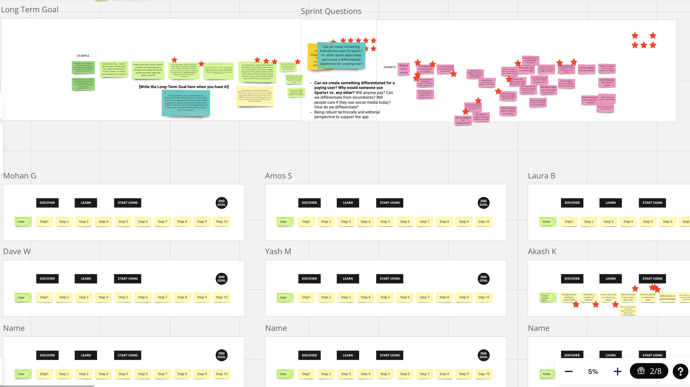
Content Mapping/User Journeys
Spent a lot of time mapping out the current content offering. Frequency of updates, length of content, content type and source. Mapped out the user journey to understand better the various entry points to the Sports Experience.
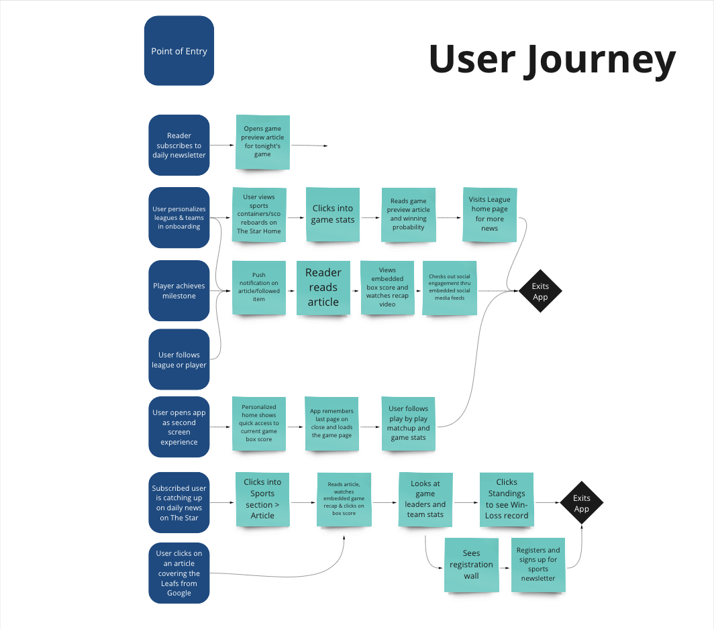
Wireframes
One of the key outputs from these early strategy/ideation sessions was we needed a short term approach to the current Sports site while we developed a more comprehensive redesign of the Sports Plus (project title name) experience. We began working with an outside Statistical vendor, so we spent time learning about their API and playing with how we might incorporate their widgets into our framework
Guiding Questions
- How do we add additional sections to the Sports Page?
- How might we incorporate Statistics to the experience?
- How can we enhance Article pages?
- How might we bring people back multiple times a day?
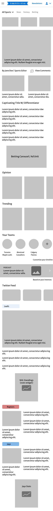
Early UI Design
Most of the early work focus on the primary navigation and how users would move around easily within the Sports Pages. We also had to create brand new secondary and tertiary levels of nav which the site did not have elsewhere. Building on the wireframes and working closely with Devs, we used early mockups to test out integrating the API work into our flow .
- Create a visual language that feels like the Star but doesn't conflict with the busy-ness of the Widgets
- Ensure that the navigation is intuitive and easy for users to quickly move though, letting users jump around the scores
- Figure out what is editable/customizable within the API so we can better integrate them into our Brand and also improve on some of the UX/UI
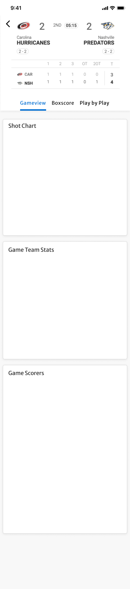
The Results
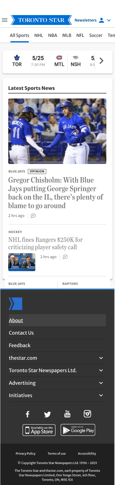

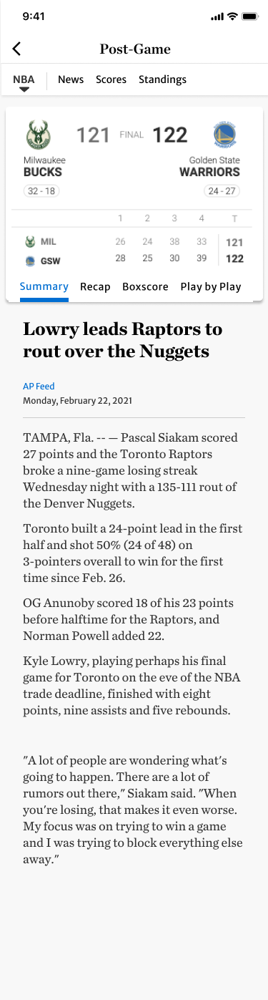
- After exhaustive testing and refining we launched the enhanced NHL and NBA pages in Sept 2021. Followed by NFL in December and MLB in February.
- Overall numbers and engagement went beyond expectation.
- Lead to launch of NorthStar betting in January 2022
- The Leafs still haven't won the Cup! :(
- 100
- Iterations
- 42
- new Pages
- 27%
- More Traffic
- 2x
- more time spent
“Finally I don't have to leave the Star to get my scores!”
Loyal Toronto Star Sports reader
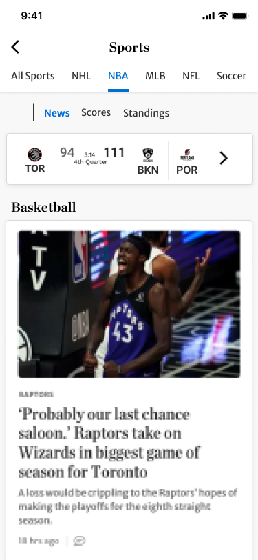
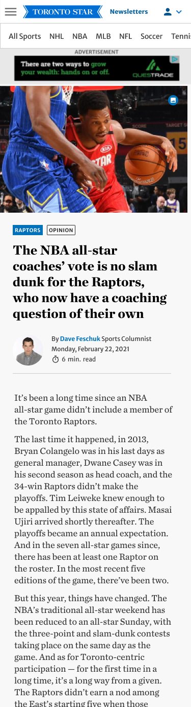
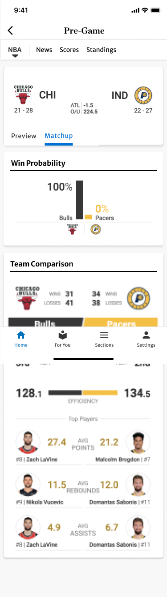
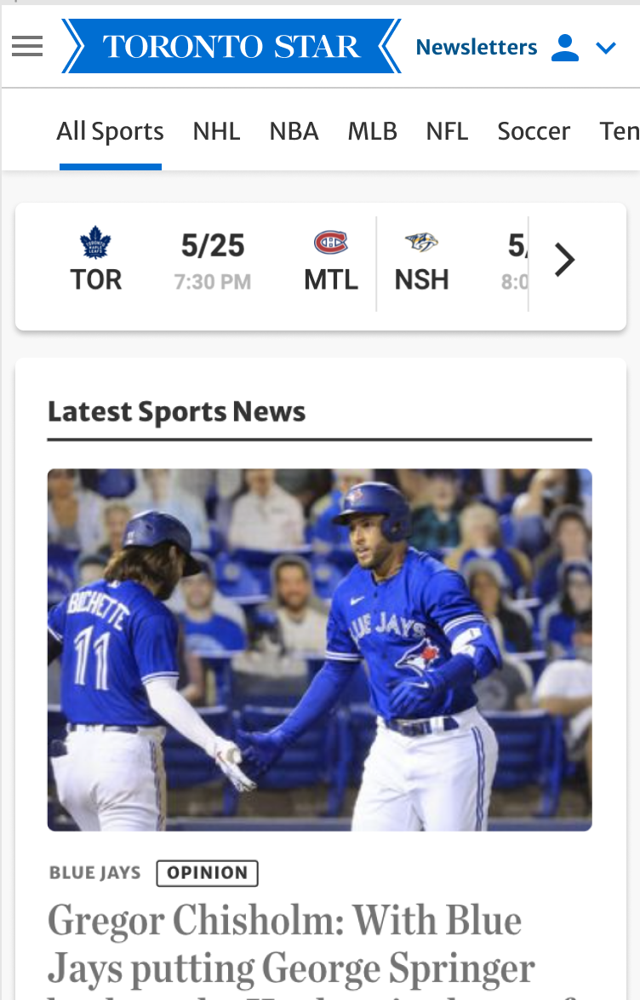
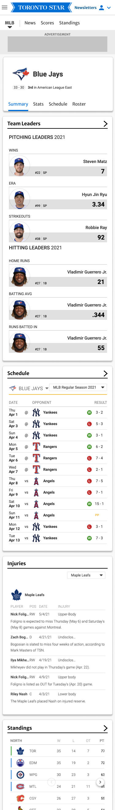
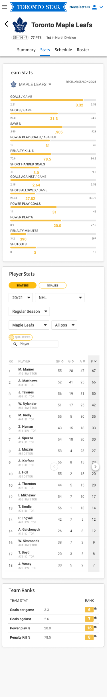